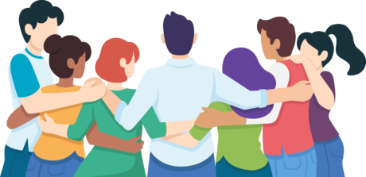

| Inicio | Concepto | Psicología | Sociedad | Prevención | Conclusiones |
A lo largo de este proyecto se analizaron diversos aspectos relacionados con el consentimiento, incluyendo su definición, importancia psicológica, impacto social, protección de menores de edad y estrategias de prevención.
Uno de los aprendizajes más importantes es que el consentimiento está relacionado con valores fundamentales como el respeto, la comunicación, la empatía y la responsabilidad.
La información y el respeto son herramientas indispensables para una convivencia saludable.

La sociedad actual enfrenta diversos desafíos relacionados con la convivencia y el respeto mutuo. Comprender la importancia del consentimiento permite fortalecer la capacidad de tomar decisiones responsables y respetar las decisiones de los demás.
La educación desempeña un papel esencial en la formación de ciudadanos responsables. Por ello resulta importante promover espacios donde las personas puedan aprender, dialogar y reflexionar sobre estos temas.
La construcción de una sociedad más justa comienza con el respeto hacia los demás.
| Página | Contenido y objetivos. |
|---|---|
| Concepto | Definición y características del consentimiento. |
| Psicología | Importancia emocional y bienestar. |
| Sociedad | Impacto social y derechos humanos. |
| Menores | Protección legal y educación. |
| Prevención | Estrategias de prevención y apoyo. |
RESPETO EMPATÍA EDUCACIÓN RESPONSABILIDAD COMUNICACIÓN
El conocimiento genera conciencia y la conciencia promueve el cambio.
La educación favorece una convivencia más saludable.
La desinformación dificulta la toma de decisiones.
ONU
UNICEF
OMS
Alumno:FLORES MARTINEZ JOSE EMMANUEL Y OLVERA CORDOBA BAYRON XAVIER